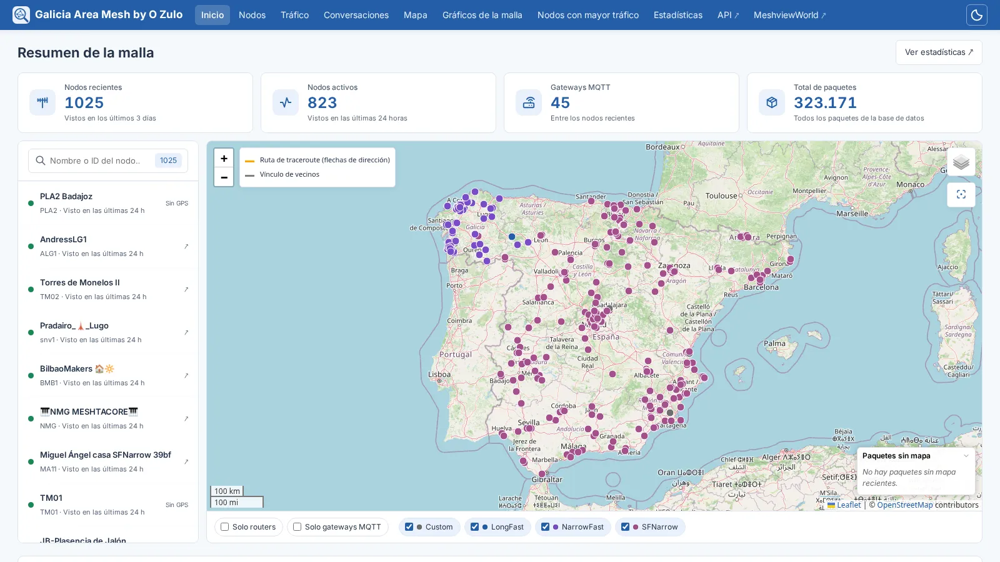
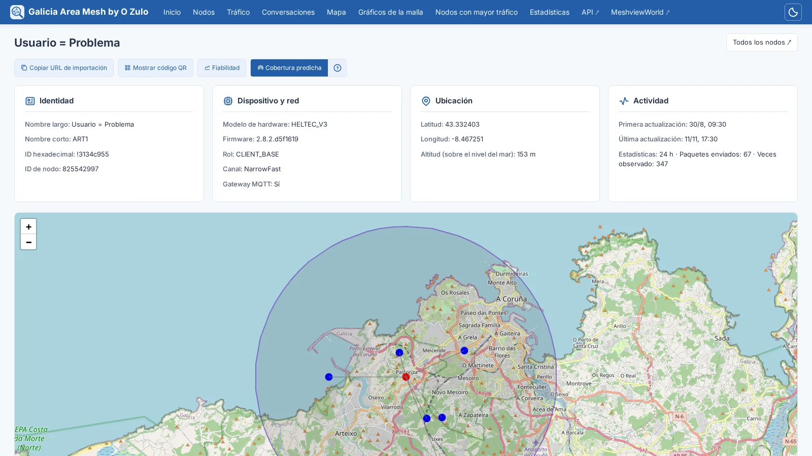
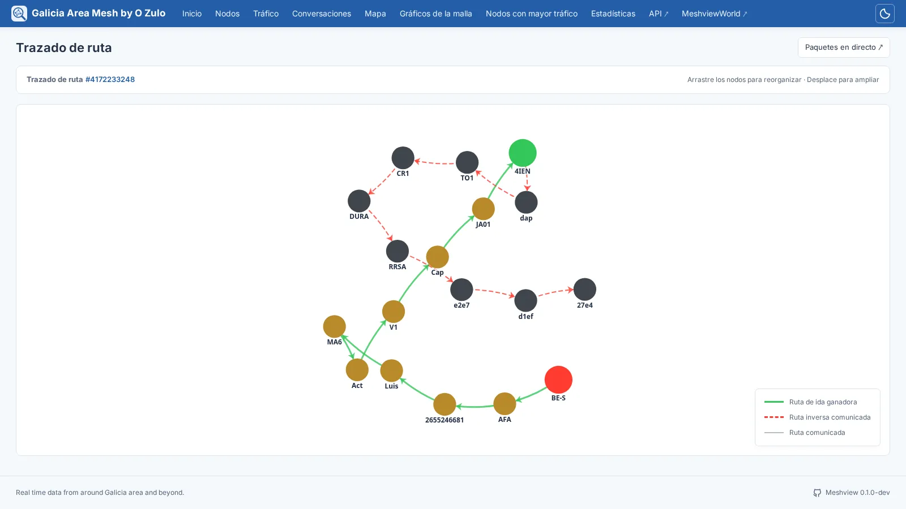
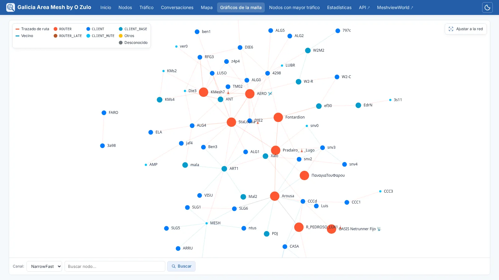
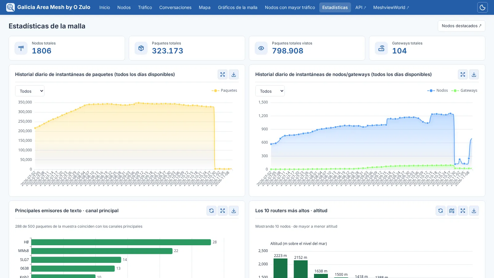
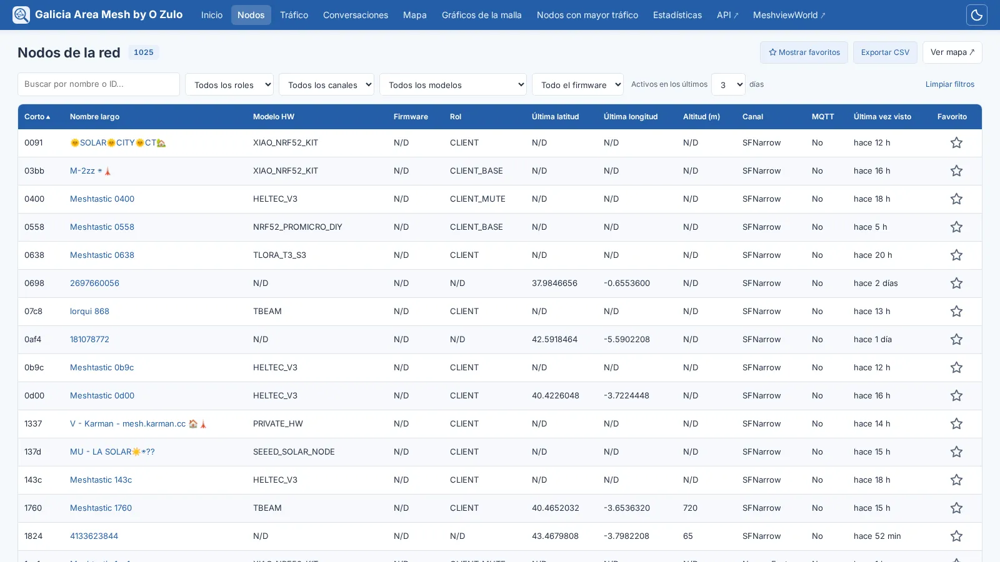
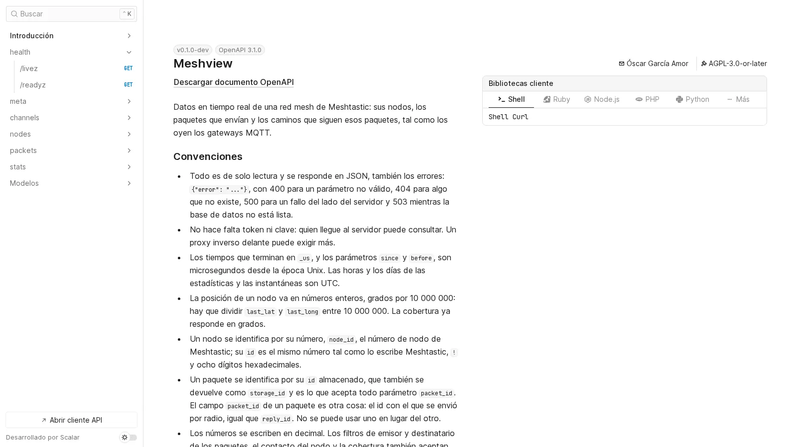

Mira tu malla Meshtastic, en directo.
Meshview lee una red mallada Meshtastic desde un broker MQTT y la muestra mientras ocurre: un mapa de sus nodos, los paquetes que envían, los caminos que siguen esos paquetes y estadísticas de todo ello.
Esto es Meshview reescrito en Rust, que toma el relevo de la
versión en Python:
las mismas páginas, la misma API y la misma base de datos, que adopta tal
cual. Un único binario estático con toda la web dentro, en inglés, español
y ruso. Cada cambio en master se compila, se prueba y se publica como
imagen, y ya da servicio a una malla pública.
Mapa en directo
Cada nodo que se oye, coloreado según el preset de su canal, con los enlaces que revelan los traceroutes y los informes de vecinos, y cada paquete parpadeando al llegar.
Una página por nodo
Su telemetría y sus vecinos, un código QR para añadirlo como contacto y hasta dónde se prevé que llegue, con el modelo de terreno del ITS.
Traceroutes
Dibujados de ida y vuelta, a partir de lo que informó cada gateway que los oyó.
Estadísticas
Paquetes, nodos y gateways día a día, los nodos con más tráfico, las conversaciones, cada paquete según llega y un modo kiosco para una pantalla en la pared.
Desde MQTT
En claro o con TLS, a una base SQLite, con limpieza e instantánea diarias y copias de seguridad consistentes cuando las pidas.
Un proceso, o varios
Todo en uno, o un ingestador que escribe y tantos servidores web como quieras leyendo a su lado, con sondas para Kubernetes.
Una API
Versionada, y documentada por el propio servidor en una referencia interactiva, en inglés, español y ruso.
Software libre
Bajo la GNU AGPL, versión 3 o posterior, escrito en Rust. Las contribuciones son bienvenidas.
Capturas
La malla que recoge O Zulo, tal como la muestra Meshview.
Resumen de la malla

Más de mil nodos, de Galicia a Andalucía, con la lista al lado para buscar.
Nodo

Quién es, qué lleva, dónde está, cuánto se le oye, sus vecinos y hasta dónde se prevé que llegue.
Traceroute

La ida en verde y la vuelta en rojo.
Gráfico de la malla

Cada enlace oído en las últimas doce horas, con los nodos coloreados por su rol.
Estadísticas de la malla

Día a día, a partir de instantáneas diarias que sobreviven a los paquetes de los que salieron.
Nodos de la red

Filtrados, ordenados y paginados por el servidor, para que miles de nodos sigan yendo ágiles.
Referencia de la API

En /api/docs de cada Meshview, generada a partir del código que responde.
Ejecutarlo
Un contenedor, un fichero de configuración y un broker que leer.
Contenedor
podman run -d --name meshview \
-p 8081:8081 \
-v meshview-data:/data \
-v ./config.toml:/etc/meshview/config.toml:ro \
ghcr.io/meshview/meshview:latestLa base de datos vive en /data, y la configuración, de solo lectura, en /etc/meshview. latest es la última versión publicada, y cada versión tiene su propia etiqueta, para amd64 y arm64.
¿Te va el riesgo? master se reconstruye con cada cambio: lo de mañana hoy mismo, con fallos garantizados y sin coste adicional.
Configuración
[mqtt]
server = "mqtt.example.org"
topics = ["msh/EU_868/#"]
[site]
title = "Nuestra malla"
language = "es"En TOML, y cualquier clave puede venir también del entorno, como MESHVIEW_MQTT__SERVER. Mira la referencia de configuración y la guía de despliegue.
Si vienes de la versión en Python
Detenla, convierte su config.ini con scripts/convert-config.py y arranca Meshview sobre la misma base de datos: la adopta tal cual, con todos sus paquetes y nodos, y las direcciones antiguas de la API redirigen a las nuevas. La guía de migración tiene los detalles, y cómo volver atrás.